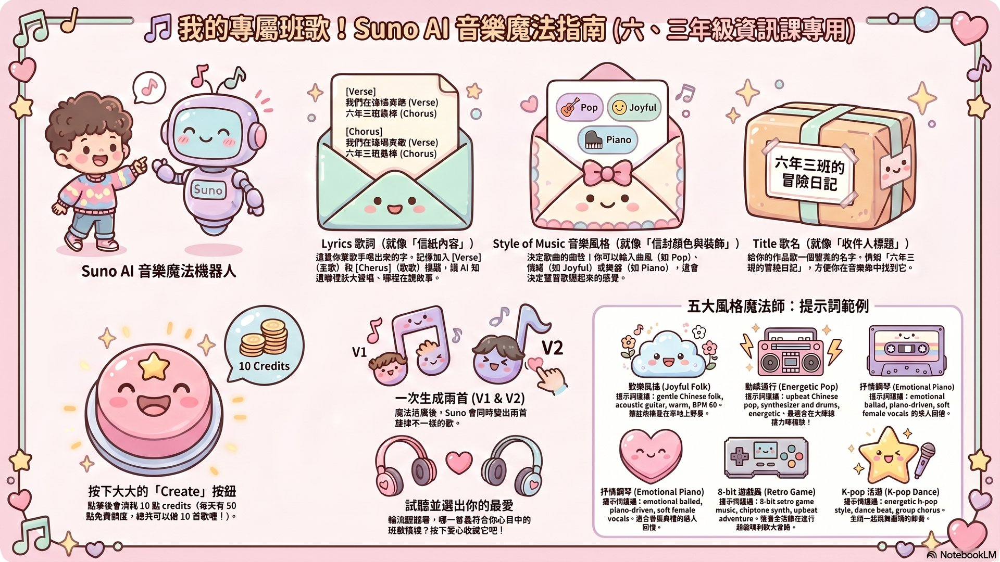
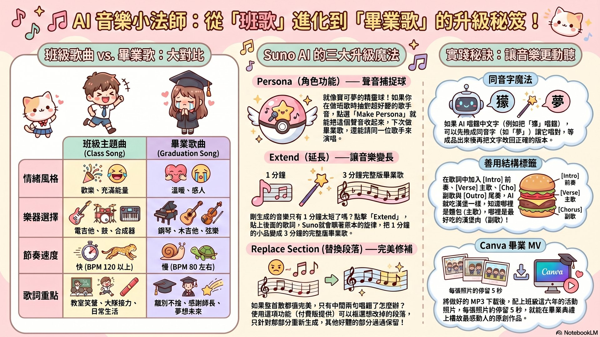
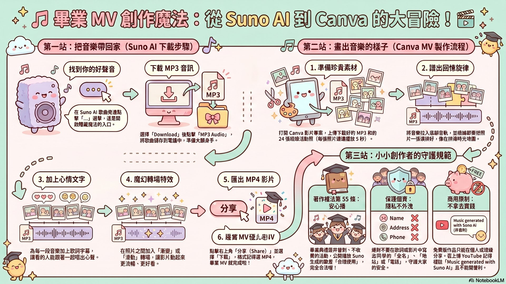

1 / 15
想像一下：用每天 50 點免費的 Suno AI，把全班最棒的回憶變成一首完整的歌！再用 Canva 配上同學的照片，做成獨一無二的畢業 MV，在畢業典禮上感動全班。本駕駛艙帶你 5 關通過，從班級主題曲一路升級到專屬畢業歌！
Suno 就像一台「神奇音樂料理機」🥘 — 你輸入文字食材（歌詞、風格），它就煮出一道有歌手演唱的歌曲大餐！
點擊下方的步驟按鈕，看看 Suno 的介面長什麼樣！
分工合作！ChatGPT 是「作文小幫手」📝、Suno 是「作曲大師」🎼。先讓 AI 寫出押韻又有結構的歌詞，再交給 Suno 譜曲。
[Intro]→[Verse]→[Chorus]→[Verse]→[Chorus]→[Bridge]→[Outro]幫這首歌組合出正確的結構順序：開場 → 主歌 → 副歌 → 主歌 → 副歌 → 橋段 → 尾奏
三個魔法欄位 + 一個 Create 按鈕，30 秒就生出兩個版本！

upbeat pop, joyful, electric guitar and drums, BPM 120選擇音樂類型 + 情緒 + 樂器 + 速度，產生你的 Style 提示詞！
把「歡樂班歌」變成「溫暖畢業歌」 — 改歌詞、改風格，還能用 Persona 保留同一個歌手嗓音，用 Extend 把短歌延長到完整版！

warm Chinese ballad, emotional, soft female vocals, piano and strings, slow tempo BPM 70, graduation theme點擊兩個按鈕，看看同一首歌詞用不同 Style of Music 會有什麼差別！
歌詞主題：大隊接力衝刺、笑聲滿教室、班導陳老師的口頭禪「再加油一點」、最棒的下課時光。
Style of Music：
upbeat pop, joyful and energetic, electric guitar and drums, BPM 120, youthful Chinese vocals
把畢業歌配上班級照片，做成感動全班的畢業 MV，在畢業典禮上播放！

調整數字，看看你的 MV 需要多少張照片！
把今天學到的 5 個關卡串聯起來，做出一份完整的畢業作品！
本駕駛艙的所有教材，都是用 NotebookLM AI 從 75 個網路來源整理萃取，再由 Claude 編寫成互動式教學頁面！下面是相關的 AI 學習資源：
含完整教學精華 + 主講者插畫，是生成簡報、影片、資訊圖表的核心來源。
包含 75 個網路來源（Suno 官方、Reddit、教育部落格、台灣著作權法），可深度查詢任何細節。
用 Google 帳號註冊立即開始創作，每天 50 點免費 credits，能做 10 首歌！
1. 深度搜尋 NotebookLM 從網路抓 75 個來源 →
2. 萃取精華 AI 整理成完整教學筆記 →
3. 生成素材 自動產生簡報＋影片＋5 張資訊圖表 →
4. 編寫頁面 Claude AI 設計互動式駕駛艙 →
5. 部署上線 GitHub Pages 公開分享！
warm piano ballad, emotional, female vocals。中文 Style 也能用，但要寫得很具體（音樂類型 + 情緒 + 樂器），否則 AI 容易亂猜。